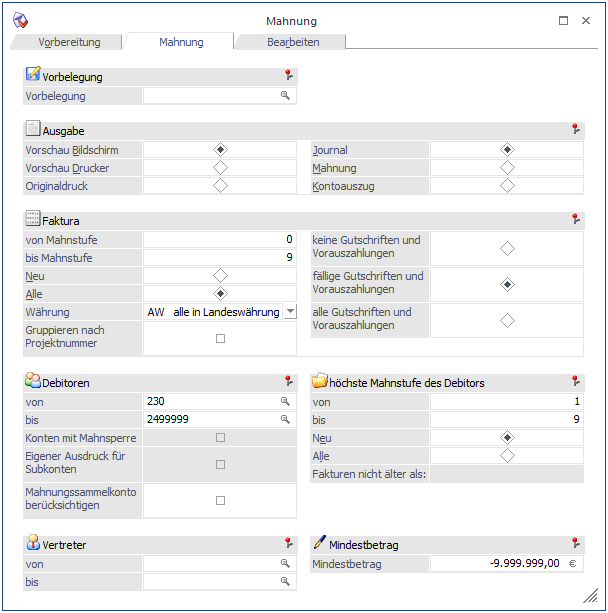
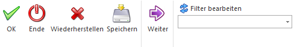
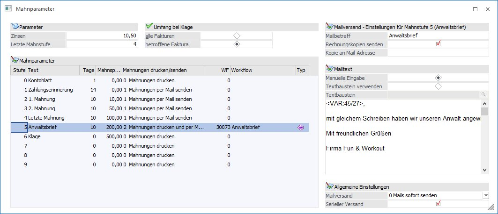
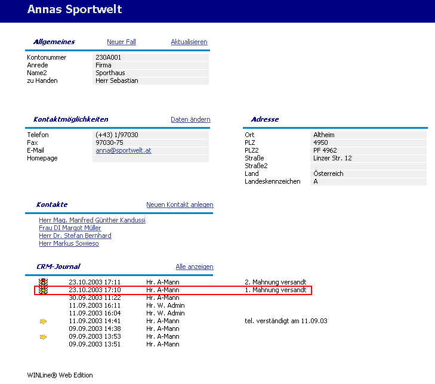
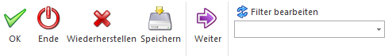

Nach Durchführen der Mahnvorbereitung öffnet sich automatisch das Register Mahnung für Ausdruck des Mahnjournals, Mahnformulars oder des Kontoauszuges. Erst bei Ausgabe als Originaldruck wird die Mahnstufe endgültig in den Offenen Posten festgeschrieben.

Buttons

Ø OK
Durch Drücken der F5-Taste wird der Ausdruck gestartet.
Ø Ende
Mit der ESC-Taste wird das Fenster geschlossen.
Ø Wiederherstellen
Mit dem Wiederherstellen-Button können alle vorgenommenen Änderungen im Mahnungsfenster wieder auf den ursprünglichen Ausgangszustand (Standard) zurückgestellt werden.
Ø Speichern
Vorbelegungen werden abgespeichert.
Ø Weiter
Diese Funktion steht Ihnen zur Verfügung, wenn sie in der Tabelle Ausgabe den Radiobutton Mahnung oder Kontoauszug angewählt haben. Nachdem sich ein Fenster geöffnet hat, können Sie sich nun mit dem Weiter-Button durch alle Konten klicken.
Ø Filter bearbeiten
Durch die Verwendung des Buttons wird der Filter aufgerufen. In der Filterauswahl können die verschiedenen bereits gespeicherten Filter ausgewählt werden. Wenn hier ein Filter ausgewählt wird, wird automatisch nach den Kriterien des Filters selektiert.
Ausgabe
Ø Vorschau Bildschirm
Die Ausgabe erfolgt auf dem Bildschirm.
Ø Journaldruck
Wird ein Mahnjournal ausgedruckt, kann man innerhalb des Bildschirmes mit den VCR-Buttons vor- und zurückblättern.
Ø Mahnung, Kontoauszug
Bei Ausgabe der Mahnung oder der Kontoblätter hat das Durchblättern mit dem Weiter-Button zu erfolgen.
Ø Vorschau Drucker
Ausgabe in den Spooler oder auf den Drucker.
Ø Originaldruck
Erst mit dem Originaldruck der Mahnung oder des Kontoauszuges wird die neue Mahnstufe FIX in die Spalte "Mahnstufe" der Offenen Posten zurückgeschrieben. Dabei wird standardmäßig ein Mahnung-Protokoll-Originalausdruck in den Spooler ausgegeben. Folgende Daten werden für jedes berücksichtigte Konto angedruckt:
ü Mahnstufe
ü Mahnbetrag
ü Art der Ausgabe (Mail oder Drucker)
ü Anzahl der berücksichtigen Rechnungskopien und
ü Fehler- oder Warntexte
Hinweis:
Beim Versenden der Mahnung kann die Absender-Adresse über dem Ribbon 'Info Center und Makros' ausgewählt werden.
Falls in den Mahnparametern bei einer Mahnstufe hinterlegt ist, dass ein Workflow angestoßen, oder eine Aktion erfolgen soll, passiert dies nur beim Originaldruck.
In den Mahnparametern ist hinterlegt, dass beim Druck der Stufe 2 die Aktion "erste Mahnung versandt" durchgeführt werden soll.

Wird nun ein Originaldruck der Mahnung gemacht, so wird bei allen Konten, die als höchste Mahnstufe die Stufe 2 erhalten, diese Aktion durchgeführt; d.h. es wird bei den betroffenen Konten der CRM-Journaleintrag "erste Mahnung versandt" geschrieben.

Ø Journal
Es werden alle Kunden mit ihren Offenen Posten und der Mahnstufe angezeigt. Pro Mahnstufe wird auf der letzten Seite eine Summe gebildet.
Ø Mahnung
Für jeden Kunden, der in die getroffene Selektion passt, wird eine Mahnung gedruckt.
Ø Kontoauszüge
Diese Option kann nur bei der Mahnung verwendet werden. Für alle ausgewählten Kunden wird ein Kontoauszug gedruckt, wobei keine Mahnspesen und Verzugszinsen berechnet werden.
Faktura
Ø Fakturen mit Mahnstufe von bis
Es können Werte von Mahnstufe 0 bis Mahnstufe 99 eingetragen werden. Die Mahnstufen 0 bis 9 entsprechen den Mahnparametern. Die Mahnstufe 91 bis 99 können als individuelle Mahnsperren pro Faktura verwendet werden.
Bei Verwendung der Option Gegenverrechnung bei den Personenkonten ist zu beachten, dass die Offenen Posten der Kreditoren standardmäßig mit Mahnstufe Null zur Verfügung gestellt werden und im Zuge der Mahnläufe keine automatische Erhöhung der Mahnstufe erfolgt.
ü Neu:
Wird diese Option
aktiviert, werden nur jene Fakturen beim Ausdruck berücksichtigt, bei denen mit
dem letzten Mahnvorbereitungslauf die Mahnstufe erhöht wurde.
ü Alle:
Mit dieser Option
werden alle Fakturen angedruckt.
Ø Beträge / Währung
Hier kann entschieden werden, welche Währungen ausgedruckt werden sollen:
AW: Es werden alle Fakturen, egal ob diese in Landes- oder Fremdwährung erfasst wurden, in Landeswährung gedruckt.
LW: Es werden alle Fakturen, die in Landeswährung erfasst wurden, gedruckt.
FW: Es werden alle Fakturen, die in Fremdwährungen erfasst wurden, gedruckt.
DEM bis USD: Es werden alle Fakturen in der entsprechenden Währung gedruckt. Gilt für die von ihnen im Menü Fremdwährungscode angelegten Währungen.
Achtung
Achten Sie darauf, dass für FW-Mahnungen eigene Formulare verwendet werden. Damit die Mahnung auch in Fremdwährung gedruckt wird, müssen die entsprechenden Formulare auch angelegt sein.
Gutschriften und Vorauszahlungen:
ü keine Gutschriften und
Vorauszahlungen:
Es werden keine Gutschriften und Vorauszahlungen
einbezogen.
ü fällige Gutschriften:
Es werden
nur die fälligen Gutschriften (Gutschriften mit Zahlungskonditionen) und
Vorauszahlungen einbezogen. Diese Einstellung wird als Standard
vorgeschlagen.
ü alle Gutschriften und
Vorauszahlungen:
Es werden alle Gutschriften und Vorauszahlungen des Kunden
mit angedruckt.
Ø Gruppieren nach Projektnummer
Wenn diese Checkbox aktiviert ist, werden die Fakturen eines Debitors nach Projektnummer sortiert ausgegeben. Für jede Projektnummer wird unter den jeweiligen Fakturen eine Projekt-Rest-Zeile ausgegeben.
Debitoren
Ø Kundenbegrenzung
Einschränkung der Kundennummern, die gedruckt werden sollen. Diese Eingabefelder werden mit RETURN übergangen.
Ø Konten mit Mahnsperre
Diese Checkbox kann nur dann ausgewählt werden, wenn die Option "Kontoauszug" verwendet wird. Durch Aktivieren dieser Checkbox wird gesteuert, dass auch für jene Kunden ein Kontoauszug gedruckt wird, bei denen die Mahnsperre aktiviert wurde.
Ø Eigener Ausdruck für Subkonten
Ein Sub-Konto ist ein Konto, das zwar eine eigene Adresse hat, aber FIBU-mäßig auf ein anderes Konto verweist. Aus diesem Grund gibt es für dieses Konto auch keine Offenen Posten, da ja alles auf das FIBU-Konto gebucht wird.
Diese Checkbox kann nur dann ausgewählt werden, wenn die Option "Kontoauszug" verwendet wird. Wenn nun diese Checkbox aktiviert ist, werden die Offenen Posten pro Sub-Konto angedruckt, auch wenn die OP auf ein anderes FIBU-Konto verweist.
Ø Mahnungssammelkonto berücksichtigen
Ist diese Checkbox gesetzt, werden beim Mahnungssammelkonto auch die Fakturen jener Konten gedruckt, die dieses Konto im Personenkontenstamm im Feld Mahnungssammelkonto eingetragen haben. Wenn das Mahnungssammelkonto auch Subkonten hat, werden die Fakturen nur beim Hauptkonto gedruckt. Es werden zuerst die Fakturen des Mahnungssammelkontos selbst und danach die Fakturen der anderen Konten ausgedruckt.
In den Mahnformularen gibt es das Flag "S - Sammelmahnung", mit dem für jedes Konto eine Kopfzeile auf der Mahnung gedruckt werden kann.
Ø Vertreter von - bis
Einschränkung der Vertreternummer, die beim Kunden hinterlegt sind.
Ø Mindestbetrag
Betragsangabe, ab der ein Konto gemahnt werden soll.
Keine Einschränkung (Bestätigen der Eingabe von -9.999.999,00).
höchste Mahnstufe des Debitors
Ø von / bis
Hier kann eine Mahnstufenbegrenzung für die Auswertung eingetragen werden. Als Standard wird von Mahnstufe 1 bis 9 vorgeschlagen. Die Mahnstufe 0 ist nur im Falle einer Ausgabe aller Offenen Posten (egal ob fällig, nicht fällig oder individuell gesperrt) einzutragen.
ü Neu: Wird diese Option aktiviert, werden nur jene Fakturen beim Ausdruck berücksichtigt, bei denen mit dem letzten Mahnvorbereitungslauf die Mahnstufe erhöht wurde.
ü Alle: Mit dieser Option werden alle Fakturen angedruckt. Wird ein Mahnjournal inkl. Fakturen der Mahnstufe 91 - 99 ausgegeben, muss diese Option aktiviert sein, da ansonsten keine Anzeige der individuell gesperrten Fakturen erfolgen kann.
Ø Fakturen nicht älter als:
Dieses Feld kann nur dann bearbeitet werden, wenn die Option "Kontoauszug" verwendet wird. Dadurch kann entschieden werden, dass Kontoauszüge, die sich seit dem letzten Mahndruck (Kontoauszugdruck) nicht verändert haben, nicht noch einmal gedruckt werden. Das Programm prüft, ob sich seit dem letzten Kontoauszug-Druck Veränderungen am Konto ergeben haben.
Buttons

Ø Filter bearbeiten
Durch die Verwendung des Buttons wird der Filter aufgerufen. In der Filterauswahl können die verschiedenen bereits gespeicherten Filter ausgewählt werden. Wenn hier ein Filter ausgewählt wird, wird automatisch nach den Kriterien des Filters selektiert.
Ø OK
Durch Drücken der F5-Taste wird der Ausdruck gestartet.
Ø Speichern
Vorbelegungen werden abgespeichert.
Ø Ende
Mit der ESC-Taste wird das Fenster geschlossen.
Ø Wiederherstellen
Mit dem Wiederherstellen-Button können alle vorgenommenen Änderungen im Mahnungsfenster wieder auf den ursprünglichen Ausgangszustand (Standard) zurückgestellt werden.
Wenn Mahnungen ausgedruckt werden, sollten folgende Regeln für die Nomenklatur der Formulare beachtet werden:
Nomenklatur der Formulare
Der Name der Mahnung ist folgendermaßen aufgebaut:
Ø P01Wmwyzzzzzxx
P01WM konstantes Kennzeichen für die Mahnung
w Ländereinstellung (0 = Deutsch, 1 = Englisch, etc. - aus WinLine START/Parameter/Einstellungen
y höchste Mahnstufe des Kunden
zzzzz Sprachkennzeichen aus dem Personenkontenstamm. Die Sprachdefinition erfolgt im Programm WinLine START im Menüpunkt Optionen/Sprachen.
xx Im Anschluss an die Mahnung kann noch ein weiterer Beleg (z.B. Zahlschein) gedruckt werden. Dies passiert allerdings nur dann, wenn für das verwendete Formular auch ein xx- Formular vorhanden ist. Auf diesem Formular können nur Kopf- und Fußteilvariablen angedruckt werden. Einzelne Faktureninformationen sind nicht möglich.
Beispiel 1
ü Das Formular P01WM03I ist die Mahnung für die deutsche Installation (P01WM03I), Mahnstufe 3 (P01WM03I), in italienischer Sprache (P01WM03I).
ü Das Formular P01WM12US ist die Mahnung für die englische Installation (P01WM12US), Mahnstufe 2 (P01WM12US), in englischer Sprache (P01WM12US).
Sind bei einem Mahnlauf entsprechende Formulare nicht vorhanden, dann sucht das Programm die am besten passenden Formulare.
Beispiel 2
Ländereinstellung = 0
höchste Mahnstufe des Kunden = 4
Sprachkennzeichen des Kunden = ENGL
ü erster Versuch: P01WM04ENGL -> sucht für Mahnstufe 4 das englische Formular)
ü zweiter Versuch: P01WM040 -> sucht das Standardformular für Mahnstufe 4 ohne Sprachdifferenzierung
ü dritter Versuch: P01WM0ENGL -> sucht für Mahnstufe 0 das englische Formular
ü vierter Versuch: P01WM000 -> sucht das Standardformular für Mahnstufe 0 ohne Sprachdifferenzierung